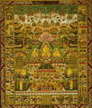

Il mandala del tempio di Taima
di Dario Doshin Girolami

Il Taima Mandara (in sanscrito mandala) è un diagramma per la meditazione che si trova nel tempio di Taima, nella prefettura di Nara, Giappone, ed è un Tesoro Nazionale dal 1961.
Come per la maggior parte delle opere artistiche buddhiste, l’autore del Taima Mandara è sconosciuto. Quanto all’origine, gli studiosi hanno dibattuto a lungo se l’opera fosse stata realizzata in Giappone copiando un modello cinese, o se fosse stata fatta direttamente in Cina. Attualmente l’ipotesi più attendibile è che l’opera sia stata prodotta in Cina nella seconda metà dell’VIII secolo, importata in Giappone subito dopo, e donata al tempio di Taima. La leggenda vuole invece che grazie alle devote preghiere di una principessa giapponese divenuta monaca buddhista, sia stato lo stesso Buddha Amida, insieme col Bodhisattva Kannon, a tessere il mandala e a rivelarlo agli esseri umani.
Si tratta di un arazzo di seta, tessuto e colorato, di 394,8 x 396,8 cm. Il Taima Mandara è composto da quattro distinte ma interrelate “corti”. La più grande e centrale è detta gengibun o “la corte della dottrina essenziale”. Nel mezzo del Paradiso di Amida, su una terrazza di fronte a un intricato palazzo in stile indiano e abitato da numerose divinità, siede Amida stesso, assieme ai suoi due principali assistenti Kannon (Avalokiteshvara) e Seishi (Mahasthamaprapta). La figura del Buddha è più grande di tutte le altre, come a comandare il Paradiso. Egli siede frontalmente su un trono, a gambe incrociate nella posizione yoga del loto, le sue mani, all’altezza del petto, sono nella posa (o mudra) della “messa in moto della ruota della Legge”. Sui palmi delle mani e dei piedi appare la Ruota della Legge, e la testa e il corpo sono circondati dall’aureola. Kannon, magnificamente adornata, siede a gambe incrociate alla sinistra di Amida. La sua mano destra poggia sul ginocchio, mentre la sinistra è sollevata in un gesto di benedizione. Come da iconografia, una figura di Amida appare sulla sua corona. Seishi, alla destra di Amida, appare anch’egli seduto nella posizione del loto, magnificamente adornato, e la sua mano sinistra è sollevata nel gesto della “non paura” (abhaya mudra).
Nel suo complesso la “trinità” appare, in proporzione, più grande del gruppo di divinità che la circonda. Di fronte a questa assemblea è rappresentato un laghetto con barche e bambini. Alcune figure siedono sui fiori di loto che si sollevano dalle acque: si tratta degli esseri rinati grazie ai loro meriti nel Paradiso di Amida. In primo piano compaiono terrazze connesse da ponti. Sulla terrazza centrale, bodhisattva e bambini suonano e ballano, mentre su quelle di destra e di sinistra Buddha stanti sono circondati da veneranti bodhisattva. Una profusione di fiori, vessilli, uccelli, strumenti musicali e divinità appare invece nella parte superiore della scena.
L’osservatore disattento potrebbe ignorare le altre tre sezioni del mandala, che sono molto più piccole della scena centrale. Ma questo sarebbe un grande errore in quanto tale porzione – la corte verticale sinistra, la corte verticale destra e la corte orizzontale alla base – rappresenta il contenuto del sutra (o testo sacro buddhista) sul quale fondamentalmente si basa il Taima Mandara: il Kanmuryōju-kyō, così come è stato interpretato dal Terzo Antenato cinese della tradizione della Terra Pura, Shan-tao (613-681), nel suo Kan-gyō shichō-shō.
Quella verticale sinistra è detta la “corte della leggenda introduttiva” o jobunji, e narra pittoricamente la storia che apre il Kanmuryōju-kyō. Ajatashatru, un malvagio principe indiano, un giorno imprigionò i propri genitori. Tuttavia le devote preghiere di Vaidehi, la madre incarcerata, toccarono Buddha Shakyamuni che le insegnò le sedici meditazioni che servono a trascendere il male e la sofferenza. Nel mandala le undici scene del racconto sono state raggruppate in sei unità, secondo il commentario di Shan-tao. A eccezione della prima scena, che si trova nella parte superiore della corte, la storia sich dispiega spazialmente e cronologicamente a partire dalla parte più bassa. La prima unità è detta kezen-en o scena introduttiva, la seconda kinpu-en o scena dell’arresto del padre, la terza kinmo-en o scena dell’arresto della madre, la quarta ongu-en o scena della rinuncia alla sofferenza, la quinta gonjō-en o scena del desiderio della Terra Pura, la sesta sazenkengyō-en o scena della generazione di meriti, e jōzenjikan-en o scena della meditazione sulla generazione di meriti specifici.
Tredici delle sedici meditazioni esposte da Buddha Shakyamuni a Vaidehi sono rappresentate nella corte verticale destra, detta jōzengi: la meditazione sul sole, sull’acqua, sulla terra ingemmata, sugli alberi ingemmati, sullo stagno ingemmato, sulla torre ingemmata, sul trono di loto, sulla trinità di Amida, sul corpo di Amida, su Kannon, su Seishi, sulla propria rinascita in paradiso, sulle diverse forme di Amida.
La corte orizzontale della parte inferiore del mandala è detta sanzengi o “corte delle meditazioni generali” e presenta le restanti tre meditazioni: quella sul grado superiore, sul grado intermedio, e sul grado inferiore di nascita. Il Kanmuryōju-kyō suddivide ognuno di tali livelli di nascita in altri tre gradi (superiore, medio e inferiore) per un totale di nove tipi di nascita. In accordo con il sutra, la parte bassa del mandala è divisa quindi in nove comparti che rappresentano i nove livelli di rinascita nel Paradiso di Amida.
Poiché nei secoli ha subito dei danni e, conseguentemente, dei restauri, è difficile comprendere se il Taima Mandara in origine fosse solo dipinto, o tessuto, o ricamato, o le tre cose insieme. Inoltre vi era anche la leggenda che fosse stato tessuto con fili di loto. Anni di ricerca hanno portato alla conclusione incontrovertibile che l’opera in origine era un arazzo (tsuzure) tessuto su seta. Su un forte ordito – l’insieme dei fili che costituisce la parte longitudinale del tessuto – è stata inserita una trama quattro volte più spessa dell’ordito. Quest’ultimo è di seta bianca, mentre la trama che costituisce e disegna le figure è fatta di fili d’oro e fili di ottima seta dipinti di blu, giallo, marrone, rosso e verde. Si ritiene che per realizzare l'opera, un gruppo di abili artigiani abbia lavorato per più di dieci anni.
Essendo stato appeso per secoli, l’arazzo subì gravi danni, soprattutto ai bordi. Per questo nel 1677 si decise di restaurarlo. Il mandala fu quindi poggiato su un diagramma che riproduceva il disegno original, e dove la seta era rotta o abrasa vennero ridipinte le parti mancanti. Oggi solo il 40% dell’opera è tessuta, e il restante 60% è dipinto.
Lo stile del Taima Mandara è caratterizzato dai volumi pieni e gentili, dai tratti sicuri e consistenti, e dai curati dettagli.
Per comprendere appieno il significato di questa opera occorre esaminare prima, seppur brevemente, l’Amidismo – il culto del Buddha Amida (in Sanscrito Amitabha) – altrimenti noto come tradizione della Terra Pura. Nata in India nei primi secoli dell’era comune, tale tradizione si è sviluppata prima in Cina e poi in Giappone, in seno al Buddhismo Mahayana. Uno dei concetti che il Mahayana ha diffuso è quello dei “Buddha sovrastorici”, cioè dei Buddha che, a differenza di Shakyamuni, non hanno una vita storica, ma dimorano eternamente in gloriosi paradisi. Secondo tale tradizione, dunque, Amida è il signore del Paradiso Occidentale, o Terra Pura.
In quest’ottica, l’Amidismo proclama come unica via per la salvezza – al posto dell’ascesi – la completa fede nella grazia di Amida. La meditazione continua su di lui e l’ininterrotta invocazione del suo nome attraverso la formula “Namo Amida Butsu”, “Onore al Buddha Amida” porterà chiunque alla rinascita nel paradiso della Terra Pura, dove si godrà di un completo benessere fino al raggiungimento della liberazione finale, o nirvana.
Vediamo ora cosa è un mandala. Fondamentalmente si tratta di un diagramma che, attraverso figure geometriche come il quadrato, il cerchio e il triangolo, riproduce schematicamente l’Universo. L’uso del mandala come supporto alla meditazione è nato e si è sviluppato in seno al Buddhismo esoterico, tuttavia è entrato a far parte anche del Buddhismo devozionale, come quello della Terra Pura, dove il diagramma, non più geometrico ma descrittivo, funge anche da spiegazione pittorica – accessibile a tutti – di concetti filosofico religiosi.
È per questo che per “leggere” il Taima Mandara occorre seguire un ordine preciso, muovendosi in senso orario. Si comincia dal jobunji, la corte di sinistra, dal basso verso l’alto; si passa poi al jozengi, la corte destra, che si legge dall’alto verso il basso; si arriva così al sanzengi, la corte più bassa, che va letta da destra verso sinistra, fino ad arrivare al punto d’inizio. In questo modo si compie – come si fa attorno agli stupa, edifici votivi che sviluppano tridimensionalmente i mandala – una circonambulazione rituale e intellettuale dell’immagine sacra, prima di focalizzare la propria attenzione sulla centrale visione del Paradiso.
Il significato della corte verticale sinistra esprime un aspetto fondamentale dell’Amidismo. Qui infatti Buddha Shakyamuni spiega a Vaidehi che, qualunque peccato si sia commesso nella vita presente o in quelle passate, attraverso la devozione e la pratica delle sedici meditazioni è possibile nascere nel paradiso di Amida, e così sottrarsi al continuo ciclo di rinascite segnate dalla sofferenza. Nella corte verticale destra viene esposto da Buddha l’insegnamento principale del Kanmuryōju-kyō, ovvero le meditazioni che conducono al Paradiso. Egli spiega a Vaidehi che è di suprema importanza formarsi una chiara base concettuale della Terra Pura, visualizzarne e interiorizzarne la gloria al fine di rinascervi. Il discorso prosegue poi nella corte orizzontale inferiore dove viene spiegato che il livello superiore di nascita tocca a coloro che si sono perfezionati nel “Triplice pensiero” (il pensiero veritiero, il pensiero profondamente devoto e il desiderio di nascere nella Terra Pura), e a coloro che sono compassionevoli. Il livello medio riguarda coloro che osservano i cinque precetti (non uccidere, non rubare, mantenere un retto comportamento sessuale, non mentire, non assumere sostanze intossicanti), coloro che onorano il padre e la madre e che esercitano la benevolenza nel mondo. Il livello più basso riguarda coloro che hanno commesso azioni malvagie. Anche essi potranno rinascere nel Paradiso, ma piuttosto che essere accolti da Amida, vivranno per qualche tempo in un bocciolo di loto dove riceveranno gli insegnamenti fino a quando il fiore sboccerà ed essi potranno godere appieno della gloria paradisiaca.
Obiettivo della corte centrale del mandala è quello di rappresentare un’ambientazione paradisiaca atta a invogliare il devoto alla pratica. Ma per non proporre un’immagine troppo lontana dalla vita quotidiana, e quindi poco appetibile, la corte è ricca di elementi che richiamano l’esistenza ordinaria: i padiglioni, le terrazze, il laghetto, gli alberi. L’osservatore può così identificarsi con l’ambientazione fisica e con le attività svolte. L’immagine quindi attrae, invita a entrare e a unirsi con essa.
Sebbene sia storicamente provato che il Mandala sia stato posto nel tempio di Taima nell’VIII secolo, per trovare documenti che parlano nuovamente di esso occorre arrivare fino al XIII secolo. Sembra quasi che l’opera sia stata dimenticata nel sonnecchioso tempio di campagna per tutto il periodo Heian (794-1185). Tuttavia in Giappone, durante questi secoli, la scuola della Terra Pura crebbe d’importanza. A causa dell’instabilità politica che caratterizzò questi anni, e del conseguente collasso economico e sociale, la società giapponese divenne sempre più sensibile al messaggio dell’Amidismo, secondo il quale, poiché si viveva in un era cosmica di decadenza (mappō), occorreva darsi totalmente a una pratica spirituale che fosse comunque facile, come la semplice recitazione del nome di Amida.
Grazie alla figura di Hōnen Shōnin (1133-1212) la scuola della Terra Pura ottenne poi una larga diffusione. Alla sua morte, quattro suoi discepoli fondarono altrettante scuole, sempre legate al culto di Amida e della Terra Pura. Una di queste fue fondata da Seizan Shōku (1177-1247), il quale, essendo parente dell’imperatore, contribuì ulteriormente alla diffusione dell’Amidismo. E fu lui che “riscoprì”, grazie alle indicazioni di un anziano monaco del tempio di Taima, il grande mandala che era sempre rimasto nel tempio. Shōku rimase colpito dalla bellezza dell’opera e dall’esattezza con cui riportava gli insegnamenti, pertanto la elevò a icona di riferimento di tutta la scuola. Da quel momento gli artisti cominciarono a riprodurre il mandala, spesso in scala ridotta, dando vita a straordinarie opere di grande importanza storica e artistica.
Bibliografia
Per una comprensione del Buddhismo della Terra Pura e del significato dei mandala si veda:
- Giuseppe Tucci, Teoria e pratica del mandala, Roma, Ubaldini, 1969
- Paul Williams, Il Buddhismo Mahayana, Roma, 1990
Per una comprensione dell’opera si veda invece:
- Elizabeth ten Grotenhuis, The Revival of the Taima Mandala in Medieval Japan, New York & London, Garland Publishing, 1995
- Joji, Okazaki, “Pure Land Buddhist Paintings”, in Japanese Arts Library, Tokyo, Weatherhill, 1973, Vol. IV
- Kenji, Toda, Japanese Scroll Painting, Chicago, University of Chicago Press, 1935
GLOSSARIO
- Amida: In lingua giapponese si definisce così Amitabha il Buddha della Terra Pura dove è possibile rinascere grazie a particolari meriti e dove si gode di un completo benessere fino al raggiungimento della liberazione finale.
- Bodhisattva: lett. Essere illuminato. Nel Buddhismo Mahayana, figura fondamentale, incarnazione della compassione, che ha rinunciato all’estinzione definitiva per aiutare tutti gli esseri a raggiungere l'illuminazione.
- Buddha: colui che si è svegliato, che ha conseguito l’illuminazione. Per eccellenza il titolo appartiene a Gautama Shakyamuni in quanto ha raggiunto la meta definitiva e può indicarla agli altri.
- Gengibun: “corte della dottrina essenziale”, la grande parte interna del Taima Mandara.
- Jobunji: “corte della leggenda introduttiva” la parte verticale sinistra del Taima Mandara.
- Jōzengi: “corte delle (tredici) concentrazioni meditative”, la parte verticale destra del Taima Mandara.
- Kanmuryōju-kyō: Sutra sulla meditazione del Buddha dalla vita infinita; uno dei testi principali della scuola della Terra Pura.
- Kannon: è forse il più popolare dei bodhisattva del Mahayana. Il suo nome in Sanscrito è Avalokiteshvara: egli è il più compassionevole salvatore dell’Universo, colui che si adopera costantemente e instancabilmente con tutti i suoi poteri per il bene di tutti gli esseri senzienti.
- Mahayana: Grande Veicolo; forma del buddhismo che sottolinea l’universalismo e i principi altruistici; è la forma attualmente praticata soprattutto in Cina, Giappone e Corea.
- Mandala: termine sanscrito formato dalla radice verbale mand che vuol dire “segnare, adornare, separare” e il suffisso la che allude all’area o al circolo che viene delimitato. In origine un diagramma che, attraverso figure geometriche, riproduceva schematicamente l’Universo del Buddhismo Esoterico. L’iniziato, opportunamente guidato dal maestro, poteva entrare mentalmente – o in quelli più grandi anche fisicamente – nello spazio delimitato dal diagramma, fino ad arrivare al Centro dove si trovava la Verità incarnata dal Buddha.
- Mudra della Messa in moto della ruota della Legge: sanscr. dharmachakra mudra, il gesto (mudra) che evoca la prima predica del Buddha.
- Mudra: nelle immagini di Buddha, posizioni delle mani che evocano un evento della vita o un’azione di Shakyamuni.
- Nirvana: il fine ultimo della via buddhista, cioè l’estinzione del desiderio e dell’attaccamento, che sono causa di continue rinascite e quindi fonte di perenne sofferenza. È l’incondizionato, l’ineffabile, la Realtà Ultima. Qualunque tentativo per definirlo è destinato a fallire, in quanto non inquadrabile nelle comuni categorie dell’intelletto.
- Sanzengi: “corte delle meditazioni generali”, la parte inferiore del Taima Mandara.
- Seishi: in sanscrito Mahasthamaprapta, bodhisattva della Terra Pura.
- Sutra: letteralmente: filo. Aforismi, discorsi, dialoghi, sermoni della letteratura buddhista.